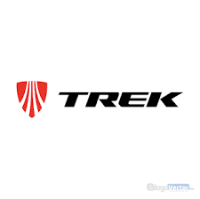
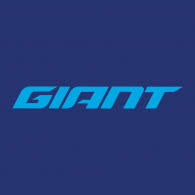

Specialized
Specialized es una de las marcas más importantes del ciclismo. Es conocida por fabricar bicicletas de alto rendimiento usadas en competencias profesionales.

Trek
Trek es una empresa estadounidense famosa por sus bicicletas de carretera, montaña y competición profesional.
SANTA CRUZ
la santa cruz es una marca especialmente para downhill se centra en lograr sus suspensiones de la mas alta calidad

GIANT
Giant Manufacturing Co. Ltd. es el mayor fabricante de bicicletas del mundo, fundado en 1972 en Taiwán, conocido por su alta calidad, innovación (cuadros de aluminio y fibra de carbono) y por producir para otras marcas líderes. Ofrece una amplia gama de bicicletas, incluyendo las reconocidas Giant Stance (montaña) y Contend (carretera), con tecnologías propias en e-bikes

SCOTT
Scott es una marca suiza líder en ciclismo desde 1958, reconocida por su innovación en ligereza y diseño, abarcando bicicletas de montaña (MTB), ruta y eléctricas (e-bikes) de alta gama